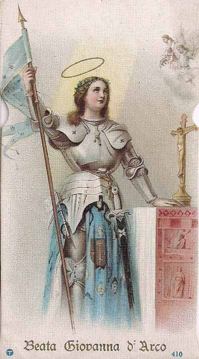

„Hoće li tko za mnom, neka se odreče samoga sebe, neka uzme svoj križ i neka ide za mnom.” (Mt 16,24)

Ivana Arška bila je mlada francuska seljanka koja je u prvoj polovici 15. stoljeća, u jeku Stogodišnjeg rata i duboke crkvene krize, doživjela mistični poziv za oslobođenje svoga naroda. Iako nepismena, njezina je duhovnost bila duboko kristocentrična i marijanska, a svoj je poziv temeljila na zavjetu djevičanstva i intenzivnom sakramentalnom životu. Njezina svetost specifična je po neraskidivoj vezi između dubokog mističnog iskustva i izravne političke te vojne misije, u kojoj je kao sedamnaestogodišnjakinja snagom vjere uspjela pokrenuti obeshrabrenu francusku vojsku.
Vrhunac njezina javnog djelovanja bilo je oslobođenje Orléansa i krunidba kralja Karla VII. 1429. godine, no ubrzo nakon toga započela je njezina teška muka. Pala je u zarobljeništvo i bila podvrgnuta dramatičnom sudskom procesu u Rouenu koji su vodili crkveni ljudi, teolozi kojima je nedostajalo poniznosti i ljubavi da u mladoj djevojci prepoznaju Božje djelo. Osuđena je kao krivovjerka i spaljena na lomači 30. svibnja 1431., umirući s pogledom na križ i izgovarajući glasno Isusovo ime, što je bio stalni dah njezine duše.
Povijesna nepravda ispravljena je tek 25 godina kasnije procesom rehabilitacije koji je proglasio njezinu nevinost i potpunu vjernost Crkvi, dok ju je papa Benedikt XV. kanonizirao 1920. godine. Ivana Arška ostaje snažan uzor laicima u političkom životu, pokazujući kako vjera treba biti svjetlo u svakoj odluci. Njezin nauk o tome da su "Isus i Crkva jedno" te njezino potpuno predanje Božjoj ljubavi snažno su utjecali na kasnije svetice, poput Terezije od Djeteta Isusa, s kojom danas dijeli čast zaštitnice Francuske.